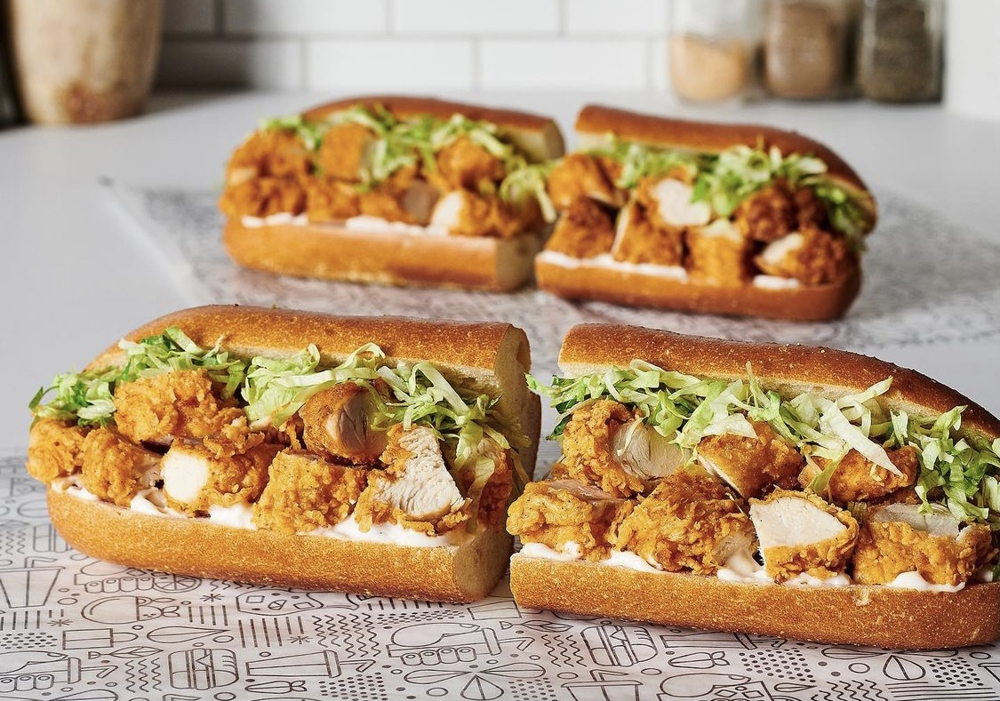

Chicken Tender Sub Order

Description
The Publix chicken tender sub is an iconic sandwhich here in florida.
As someone who works in the Publix deli where this sandwhich is made,
I know some of the best ways to prepare this sub and some of the wost.
I will give y'all my prefered way to make this sub.
Ingredients
- Good attitude
- Pleasent smile
- Don't be rude for the love of god I'm just doing my job
Instructions
- Ask for the sub of wheat bread
- Ask for American cheese (white and yello taste the same
so it doesn't matter)
- Get it toasted
- Add buffalo sauce and ranch